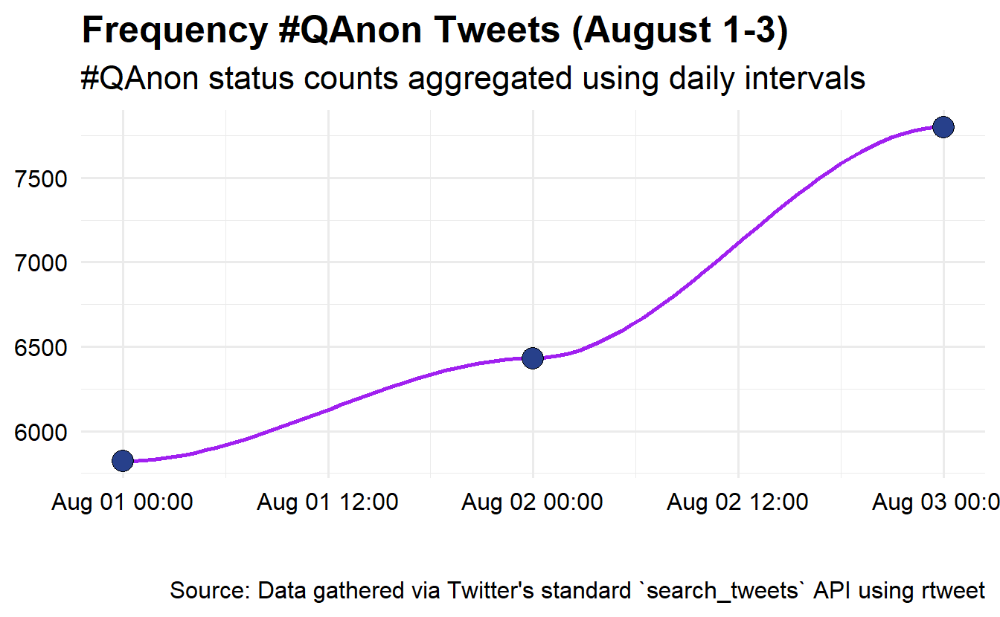
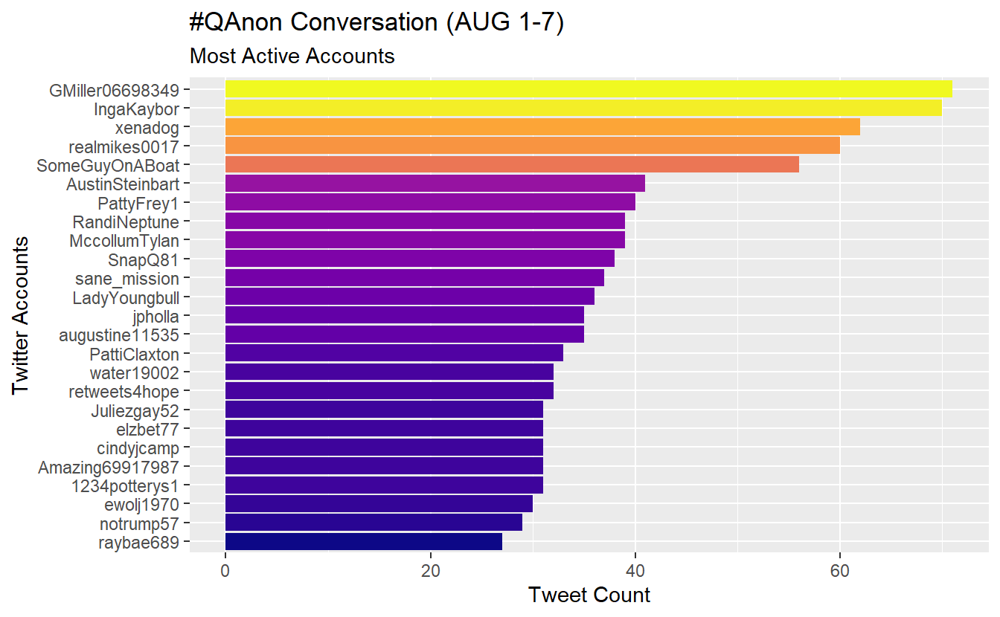
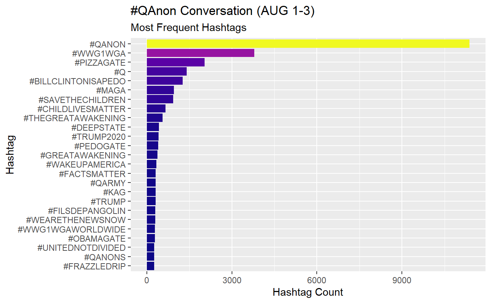
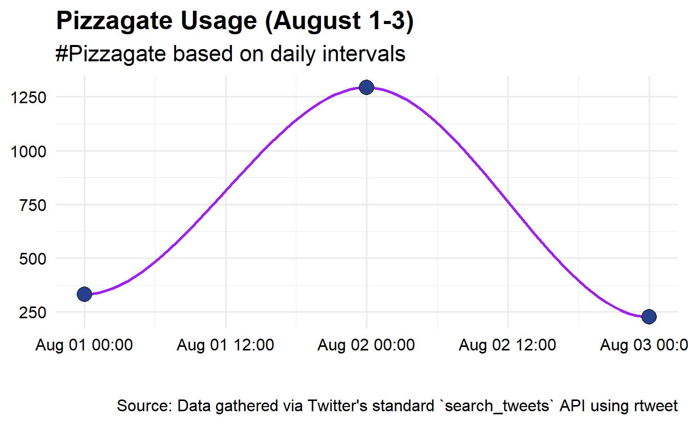
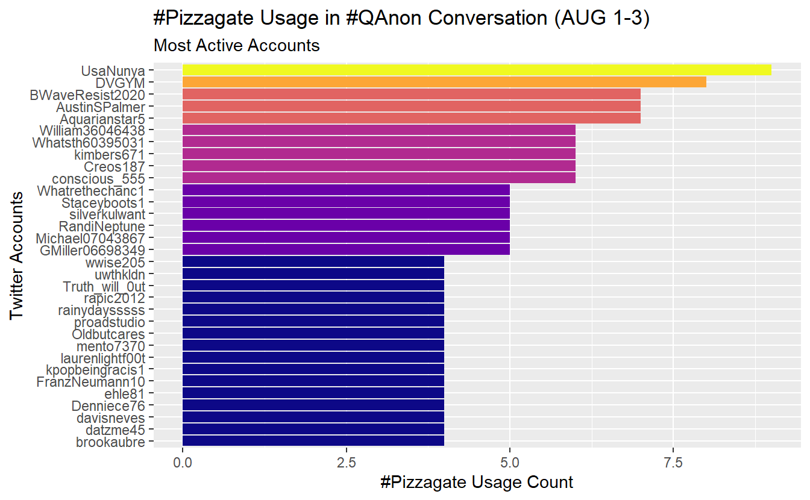
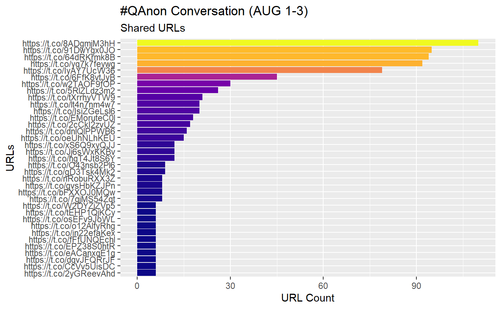
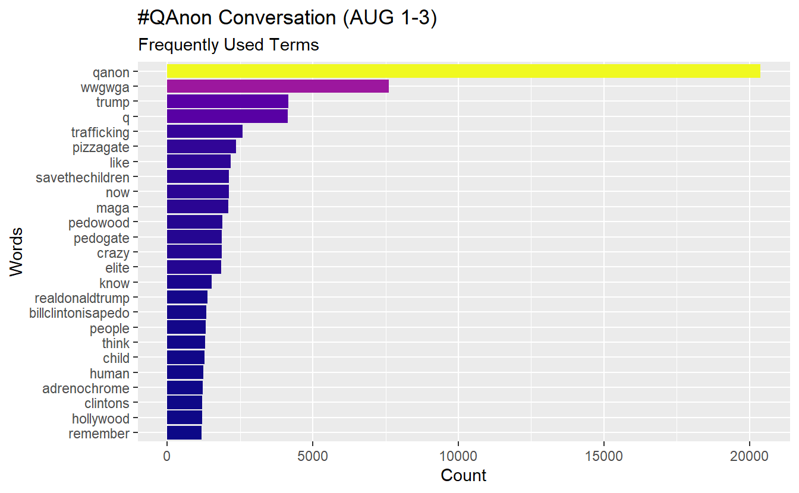
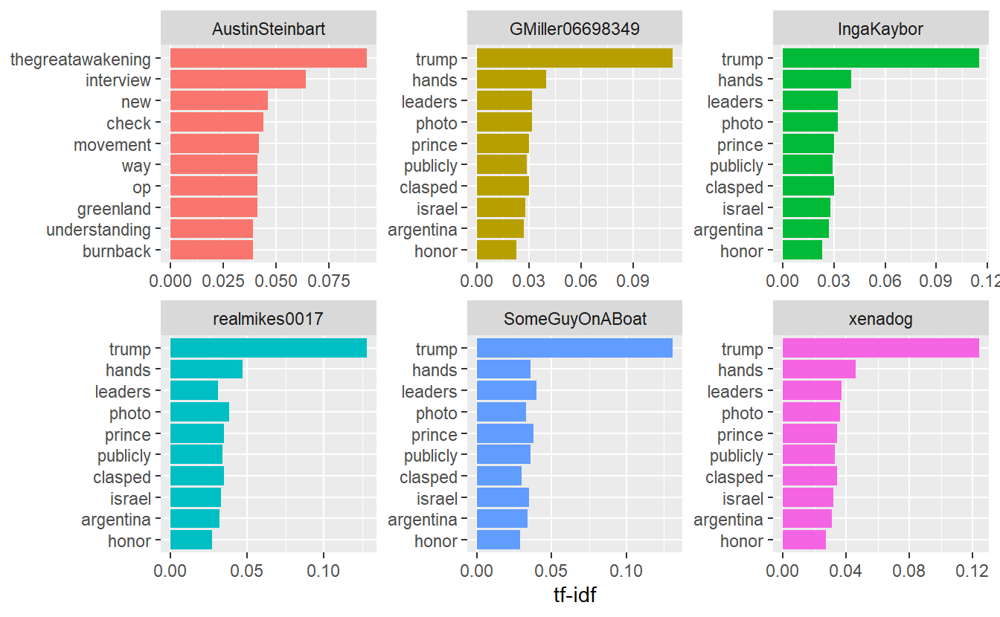
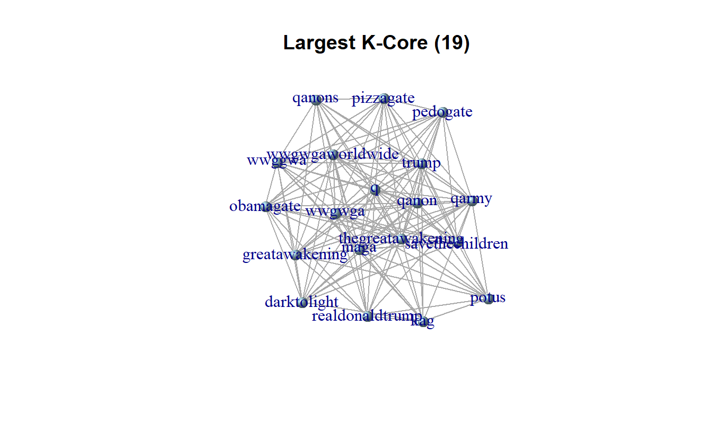

16 Text Mining and Semantic Network Analysis
Place a header at the top of your script that tells you what you called it, what it accomplishes, etc.
#################################################
# What: Text Mining and Analysis
# Created:
# Revised:
#################################################We will use a handful of packages for this exercise. You will need to install these first if you haven’t done so already (install.packages()).
library(igraph)
library(RColorBrewer)
library(rtweet)
library(stopwords)
library(tidytext)
library(tidyverse) # We work mostly with dplyr, ggplot, stringr,and tidytext.
library(wordcloud2)Set your global options so that strings are NOT considered as factors. If you are not familiar with factors, these are ordered vectors used to store categorical data (Wickham 2019). By default, functions in R will coerce strings as factors, so we will turn off this behavior before we begin working with text data.
options(stringsAsFactors = FALSE)In this exercise, we will demonstrate basic text mining and analysis by exploring a subset of a hashtag-based, Twitter data set pulled using Twitter’s REST API. Specifically, we used rtweet’s search_tweets() function to search for tweets containing #QAnon from April to November 2020. This lab’s data set consists of relevant tweets from August 1-3, during which there were ~20,000 tweets.
Note much of this is adapted from the excellent reference, Text Mining with R: A Tidy Approach (2017), which is freely available online: https://www.tidytextmining.com/.
Go ahead and import the data. This step may take some time, so please be patient.
load("data/AUGSAMPQ_df.RData")Since this exercise is adapted from a tutorial using the tidyverse keep in mind that the syntax may look a bit different. The tidyverse often utilizes “piping” (%>%) to execute chained actions.
You can think of the %>% as saying “and then” followed by a function
or action. The use of this operator is not required, but we will use it
here.
In base R we would read and summarize the following way:
df <- read.csv("PATH/TO/MY/DATA")
summary(df)However, in the tidyverse the %>% operator is used to chain objects by passing either the raw data or the resulting data from a function to another for additional processing.
read.csv("PATH/TO/MY/DATA") %>%
summary()Both function calls achieve the same goal.
16.1 Data Exploration
Let’s get acquainted with the data set. You’ll see that it contains 20,053 unique statuses/tweets and 91 variables.
AUGSAMPQ_df %>%
dim_desc()[1] "[20,053 x 91]"In this data set, each row corresponds to a user’s tweet/status and the subsequent columns are comprised of attributes describing the tweet. Go ahead and check out the column names/variables using the colnames() function.
colnames(AUGSAMPQ_df)Feel free to use the head(AUGSAMPQ_df) or View(AUGSAMPQ_df) functions to check out the data set; however, the results may appear slowly. We will be particularly interested in the text column, which is the fifth column and includes the tweet content.
It is useful to explore some other details about the data set, such as tweet frequency over time, the most active users, and the most used hashtags contained in tweets using #QAnon. We’re using code from https://github.com/mkearney/rstudioconf_tweets. First, let’s look at the number of tweets using #QAnon during the August 1-3 time frame.
AUGSAMPQ_df %>%
# ts_plot creates a ggplot of tweet frequencies over time.
rtweet::ts_plot(by = "day", color = "transparent") +
# The following functions are exported from the ggplot2 package.
geom_smooth(se = FALSE, color = "purple") +
geom_point(size = 5, shape = 21, fill = "royalblue4") +
theme_minimal(base_size = 15) +
theme(axis.text = element_text(colour = "black"),
plot.title = element_text(size = rel(1.25), face = "bold"),
plot.subtitle = element_text(size = rel(1.1)),
plot.caption = element_text(colour = "black")) +
labs(title = "Frequency #QAnon Tweets (August 1-3)",
subtitle = "#QAnon status counts aggregated using daily intervals",
caption = "\n\nSource: Data gathered via Twitter's standard `search_tweets` API using rtweet",
x = NULL, y = NULL)
Next, let’s adjust the code a little bit to check out the most active Twitter accounts (top 25 accounts) using #QAnon during the time frame. The process below can be broken down into two steps. First the data is wrangled into the appropriate format by counting the screen_name variable, reordering the resulting data by descending number (n) of appearances, and then selecting for the top 25 observations. Second, the data is used to create a graph object, which is fine tuned using functions from the ggplot2 library.
AUGSAMPQ_df %>%
# data wrangling
count(screen_name) %>%
mutate(screen_name = fct_reorder(screen_name, n)) %>%
top_n(25) %>%
# Data plotring
ggplot(aes(x = screen_name, y = n, fill = n)) +
geom_col(show.legend = F) +
xlab(NULL) +
coord_flip() +
viridis::scale_fill_viridis(option = "plasma") +
labs(y = "Tweet Count",
x = "Twitter Accounts",
title = "#QAnon Conversation (AUG 1-7)",
subtitle = "Most Active Accounts")
Let’s create and save account count data as a data.frame so we can use it later.
active_accounts <- AUGSAMPQ_df %>%
count(screen_name, sort = TRUE)Check out the most frequently used hashtags in our data. In this example, we expect #QAnon to appear the most often, but this approach could be useful to guide further collection because one of the biggest challenges is deciding on which hashtags by which to collect our data. For the sake of brevity, we have included notes on each step as a comment.
AUGSAMPQ_df %>%
# Select the variable of interest, which is a list column
select(hashtags) %>%
# Unnest the list column
unnest(hashtags) %>%
# Filter out missing data (NAs)
filter(!is.na(hashtags)) %>%
# Standardize your text characters by transforming them to upper case
mutate(hashtags = str_to_upper(hashtags)) %>%
# Count how many times a give string (hashtag) appears in the variable
count(hashtags) %>%
# Modify the hashtags by adding a "#" at the start and then order the factors
mutate(hashtags = str_c("#", hashtags) %>%
fct_reorder(., n)) %>%
# Arrange by n
arrange(n) %>%
# Pull the top 25 entries
top_n(25) %>%
# Graph your data
ggplot(aes(x = hashtags, y = n, fill = n)) +
geom_col(show.legend = FALSE) +
coord_flip() +
viridis::scale_fill_viridis(option = "plasma") +
labs(y = "Hashtag Count",
x = "Hashtag",
title = "#QAnon Conversation (AUG 1-3)",
subtitle = "Most Frequent Hashtags")
Let’s follow one of the hashtags over time. Here we will look at “#pizzagate” over the three days. Here we’ll use the str_detect() function in conjunction with filter() to identify and extract tweets that contain the hashtag.
AUGSAMPQ_df %>%
# Use str_detect() function to search for patterns in text
filter(str_detect(string = text, pattern = "#pizzagate")) %>%
# Plot the activity using the ts_plot() function and other ggplot2 functions
ts_plot("day", color = "transparent") +
geom_smooth(se = FALSE, colour = "purple") +
geom_point(size = 5,
shape = 21, fill = "royalblue4") +
theme_minimal(base_size = 15) +
theme(axis.text = element_text(colour = "black"),
plot.title = element_text(size = rel(1.25), face = "bold"),
plot.subtitle = element_text(size = rel(1.1)),
plot.caption = element_text(colour = "black")) +
labs(title = "Pizzagate Usage (August 1-3)",
subtitle = "#Pizzagate based on daily intervals",
caption = "\n\nSource: Data gathered via Twitter's standard `search_tweets` API using rtweet",
x = NULL, y = NULL)
Now let’s check out which accounts used this hashtag the most frequently during our time frame of interest.
AUGSAMPQ_df %>%
# Use str_detect() function to search for patterns in text
filter(str_detect(string = text, pattern = "#pizzagate")) %>%
# Here we will aggregate our data by screen_name and then sort
count(screen_name) %>%
arrange(desc(n)) %>%
# We have several tied with 6
top_n(26) %>%
mutate(screen_name = fct_reorder(screen_name, n)) %>%
# Graph
ggplot(aes(x = screen_name, y = n, fill = n)) +
geom_col(show.legend = F) +
coord_flip() +
viridis::scale_fill_viridis(option = "plasma") +
labs(y = "#Pizzagate Usage Count",
x = "Twitter Accounts",
title = "#Pizzagate Usage in #QAnon Conversation (AUG 1-3)",
subtitle = "Most Active Accounts")
We can explore the most shared URLs as well. While there are several URL-based columns, we will check out the urls_t.co column for demonstration purposes. Notice we haven’t pre-processed our data yet, so the links are intact.
AUGSAMPQ_df %>%
# Prepocess your data, first select and rename the variable of interest
select(urls = urls_t.co) %>%
# Unnest the list column
unnest() %>%
# Filter out missing data
filter(!is.na(urls)) %>%
# Count and select the top
count(urls) %>%
mutate(urls = fct_reorder(urls, n)) %>%
top_n(25) %>%
arrange(desc(n)) %>%
# Graph
ggplot(aes(x = urls, y = n, fill = n)) +
geom_col(show.legend = F) +
coord_flip() +
viridis::scale_fill_viridis(option = "plasma") +
labs(y = "URL Count",
x = "URLs",
title = "#QAnon Conversation (AUG 1-3)",
subtitle = "Shared URLs")
We’ll build a data frame so we can search for links on the web (you don’t have to do this).
count_urls_df <- AUGSAMPQ_df %>%
select(link = urls_t.co) %>%
unnest(link) %>%
count(link, sort = TRUE) %>%
filter(!is.na(link))
head(count_urls_df)# A tibble: 6 x 2
link n
<chr> <int>
1 https://t.co/8ADgmjM3hH 110
2 https://t.co/91DwYgx0JO 95
3 https://t.co/64dRKrmk8B 94
4 https://t.co/yq7k7feywg 92
5 https://t.co/IyAY7UcW36 79
6 https://t.co/6FfK8vtJyB 4516.1.1 Data Formatting and Preprocessing Text
We need to preprocess our data before doing any more text analysis (well, at least what we cover in class). Specifically, we will do the following (we will not cover stemming or lemmatization in this lab):
- Use
select()function to simplify our data set. - Use
mutate()to modify the content of the text. - Utilize
unnest_tokens()to pull out all words from the tweets. - Apply extant and custom stop word list(s) to remove common stop words (e.g., “and,” “of”)
We did not do these steps before looking for active accounts, frequently used hashtags in the conversations, commonly shared links, etc. because pre-processing may affect some of those items.
Also keep in mind that you will often find yourself going through some of these steps multiple times in your analyses. For instance, it is common to see unwanted characters (such as those produced by emojis) in the analysis of social media-based data, which you may not pick up at first.
Once you’ve run the code below, you should see words associated with accounts.
words_df <- AUGSAMPQ_df %>%
# Select variables of interst
select(screen_name, text) %>%
# Remove digits and punctuation with str_remove_all
mutate(text = str_remove_all(text, pattern = "\\d|[:punct:]")) %>%
# Remove additional junk from the text: https
mutate(text = str_remove_all(text, pattern = "https|t.co")) %>%
# Standardize your words by transforming them to upper case
mutate(text = str_to_upper(text)) %>%
# Unnest/extract words
unnest_tokens(word, text)
head(words_df) screen_name word
1 S223S223 qanon
2 S223S223 to
3 S223S223 reverse
4 S223S223 the
5 S223S223 spells
6 S223S223 qanonYou’ll notice that we need to remove some commonly used words, such as “the” and “to,” that do not contribute to our analysis in a meaningful way. Such words are called, stop words. We can delete stop words by leveraging existing stop word lists. One package is the stopwords package.
sw_list_en <- stopwords::stopwords(language = "en", source = "snowball")Take a peek at what words are included in the sw_list_1 vector:
sw_list_en[1:5][1] "i" "me" "my" "myself" "we" Now filter your data to remove these unwanted words. While we are at it, remove any NA from your data.
words_df <- words_df %>%
filter(!word %in% sw_list_en) %>%
filter(!is.na(word))
head(words_df) screen_name word
1 S223S223 qanon
2 S223S223 reverse
3 S223S223 spells
4 S223S223 qanon
5 S223S223 thegreatawakening
6 Shaddilay wowNot all stop words lists are the same, even those for the same language. Thus, you can leverage multiple stop lists to refine your data further. You can check out the stopwords github site (https://github.com/quanteda/stopwords) to explore additional options. Here we’ll apply two additional stop word lists to our data set; one in English and another in Japanese (we have many tweets in Japanese).
sw_list_en2 <- stopwords::stopwords(language = "en", source = "marimo")
sw_list_ja <- stopwords::stopwords(language = "ja", source = "marimo")Now continue filtering your data to remove redundant words. Notice the dimensions of the data frame contains fewer observations.
words_df <- words_df%>%
filter(!word %in% sw_list_en2) %>%
filter(!word %in% sw_list_ja)You may create your own list of stop words, too. To create one, generate a character vector using the c() function and then filter your data like before.
sw_list_extras <- c("tcofztfwqi", "amp", "sa", "submitted", "submission",
"submit")
words_df <- words_df %>%
filter(!word %in% sw_list_extras) At this point, our data should be sufficiently “clean.” That is, free of stop words (e.g., determiners, coordinating conjunctions, prepositions, etc.) and in the correct format to execute some analysis.
16.2 Analysis
16.2.1 Frequencies
Like with hashtags and URLs, we may want to “mine” the tweets to identify “important terms.” A basic approach is observing term frequencies. Once you’ve counted the number of times that each term appears, you can visualize the results several ways.
First, we have to count how many times a word appears.
word_counts <- words_df %>%
count(word) %>%
rename(freq = n) %>%
arrange(desc(freq))
head(word_counts) word freq
1 qanon 20375
2 wwgwga 7608
3 trump 4154
4 q 4128
5 trafficking 2577
6 pizzagate 2365Let’s plot our most frequent words(n = 25) using a basic bar plot. Notice “qanon” appears 20,053 times, which is how many tweets we started out with based on our search parameters using Twitter’s API.
word_counts %>%
top_n(25) %>%
mutate(word = fct_reorder(word, freq)) %>%
ggplot(aes(x = word, y = freq, fill = freq)) +
geom_col(show.legend = F) +
xlab(NULL) +
coord_flip() +
viridis::scale_fill_viridis(option = "plasma") +
labs(y = "Count",
x = "Words",
title = "#QAnon Conversation (AUG 1-3)",
subtitle = "Frequently Used Terms")
Word clouds have their critics and are not necessarily considered analysis; however, they can be useful in limited occasions. To build one, we will leverage the wordcloud2 package. Here will plot only words that appear at least 150 times in the text.
set.seed(142) # We set this so you can get similar results.
word_counts %>%
# Filter out words to a minimum frequency of 150
filter(freq >=150) %>%
wordcloud2(size = 1.6, color = 'random-light', backgroundColor = "white")16.2.2 Term Frequency - Inverse Document Frequency (TF-IDF)
This statistic is intended to help us measure how important a word is to a document in a collection (or corpus) of documents (Robinson and Silge 2017). For example, we can see how important words are to top active users across the entire collection of tweets. You can think of this statistic as a logical next step from basic term frequencies because it accounts for the distribution of each term throughout an entire corpus. With this statistic, we can ask ourselves, are users using similar terms or language? What distinguishes an account in a data set from the others?
The first step is to produce a word per Twitter user count using the code below. For example, the first user’s tweets contain the term “trump” 102 times in the data set.
words_df %>%
group_by(screen_name, word) %>%
summarise(word_freq_by_user = n()) %>%
arrange(desc(word_freq_by_user)) %>%
head(10)# A tibble: 10 x 3
# Groups: screen_name [6]
screen_name word word_freq_by_user
<chr> <chr> <int>
1 IngaKaybor trump 102
2 GMiller06698349 trump 100
3 realmikes0017 trump 96
4 xenadog trump 96
5 SomeGuyOnABoat trump 92
6 GMiller06698349 qanon 71
7 IngaKaybor qanon 70
8 xenadog qanon 62
9 MccollumTylan trump 61
10 realmikes0017 qanon 60Next, look at the total words per user account.
words_df %>%
group_by(screen_name, word) %>%
summarise(word_freq_by_user = n()) %>%
ungroup() %>%
group_by(screen_name) %>%
mutate(total_words_by_user = sum(word_freq_by_user)) %>%
arrange(desc(word_freq_by_user)) %>%
head(10)# A tibble: 10 x 4
# Groups: screen_name [6]
screen_name word word_freq_by_user total_words_by_user
<chr> <chr> <int> <int>
1 IngaKaybor trump 102 1826
2 GMiller06698349 trump 100 1830
3 realmikes0017 trump 96 1548
4 xenadog trump 96 1600
5 SomeGuyOnABoat trump 92 1452
6 GMiller06698349 qanon 71 1830
7 IngaKaybor qanon 70 1826
8 xenadog qanon 62 1600
9 MccollumTylan trump 61 1016
10 realmikes0017 qanon 60 1548Now that we have built code to arrive at the necessary information, let’s go ahead and calculate TF-IDF using bind_tf_idf() and passing this into an object for future use. Terms with a tf_idf score of 0 are extremely common words throughout the entire set of videos. In other words, words with higher scores are relatively unique to an account in comparison to the total distribution of words.
tf_idf_user <- words_df %>%
group_by(screen_name, word) %>%
summarise(word_freq_by_user = n()) %>%
ungroup() %>%
group_by(screen_name) %>%
mutate(total_words_by_user = sum(word_freq_by_user)) %>%
arrange(desc(word_freq_by_user)) %>%
tidytext::bind_tf_idf(word, screen_name, word_freq_by_user) %>%
mutate_if(.predicate = is.double, ~ round(.x, digits = 3))
tf_idf_user# A tibble: 256,227 x 7
# Groups: screen_name [10,155]
screen_name word word_freq_by_user total_words_by_us~ tf idf tf_idf
<chr> <chr> <int> <int> <dbl> <dbl> <dbl>
1 IngaKaybor trump 102 1826 0.056 2.06 0.115
2 GMiller06698349 trump 100 1830 0.055 2.06 0.113
3 realmikes0017 trump 96 1548 0.062 2.06 0.128
4 xenadog trump 96 1600 0.06 2.06 0.124
5 SomeGuyOnABoat trump 92 1452 0.063 2.06 0.131
6 GMiller06698349 qanon 71 1830 0.039 0.037 0.001
7 IngaKaybor qanon 70 1826 0.038 0.037 0.001
8 xenadog qanon 62 1600 0.039 0.037 0.001
9 MccollumTylan trump 61 1016 0.06 2.06 0.124
10 realmikes0017 qanon 60 1548 0.039 0.037 0.001
# ... with 256,217 more rowsNow we want to plot the most “important” words, as measured by TF-IDF, per user. However, we cannot plot the results in a meaningful way at this point because we have thousands of Twitter accounts in our data set. Instead, let’s plot the TF-IDF scores for the most active accounts (remember, we saved that info in the “active_accounts” data frame), let say, those with more than 40 tweets during the August 1-3 time frame. Doing this by centrality might be misleading unless we consider only retweets; for example, President Trump has a high in-degree centrality score but did not tweet anything with #QAnon.
We will do the following steps to build some plots:
- Filter/extract out the most active accounts (>40 tweets).
- Use
left_join()to merge these active accounts with their TF-IDF scores (i.e, “tf_idf_user” data frame). - Visualize the most active accounts’ scores.
First, let’s use dplyr to extract videos that users have quoted, replied to, or retweeted more than 40 times (i.e. top 6 accounts). We will call this top_accounts and then rename n to reflect their number of tweets.
top_accounts <- active_accounts %>%
filter(n > 40) %>%
rename(No_Tweets = n)
head(top_accounts) screen_name No_Tweets
1 GMiller06698349 71
2 IngaKaybor 70
3 xenadog 62
4 realmikes0017 60
5 SomeGuyOnABoat 56
6 AustinSteinbart 41Use left_join() function to match and join rows from our tf_idf_user data set that match a “screen_name” in our “top_accounts” data frame. Once we select a few key columns of interest, the result gives us TF-IDF scores of the most active accounts.
top_tf_idf_user <- top_accounts %>%
left_join(tf_idf_user, by = "screen_name")
head(top_tf_idf_user) screen_name No_Tweets word word_freq_by_user total_words_by_user tf
1 GMiller06698349 71 trump 100 1830 0.055
2 GMiller06698349 71 qanon 71 1830 0.039
3 GMiller06698349 71 hands 14 1830 0.008
4 GMiller06698349 71 leaders 12 1830 0.007
5 GMiller06698349 71 new 12 1830 0.007
6 GMiller06698349 71 photo 12 1830 0.007
idf tf_idf
1 2.062 0.113
2 0.037 0.001
3 5.218 0.040
4 4.869 0.032
5 2.949 0.019
6 4.856 0.032Now, using ggplot2, let’s create a few plots to depict the results for the most active accounts.
top_tf_idf_user %>%
arrange(desc(tf_idf)) %>%
mutate(word = factor(word, levels = rev(unique(word)))) %>%
group_by(screen_name) %>%
top_n(10) %>%
ggplot(aes(word, tf_idf, fill = screen_name)) +
geom_col(show.legend = FALSE) +
labs(x = NULL, y = "tf-idf") +
facet_wrap(~screen_name, ncol = 3, scales = "free") +
coord_flip()
16.2.3 Bigrams
A useful approach to gain context about how words are used is to look at pairs of co-occurring words. As you can guess, many ways exist to define exactly what “co-occurrence” means (e.g, bi-gram, sentence, and paragraph). Here we will look at “bigrams,” or pairs of words, to set ourselves for semantic network analysis. One can imagine how this might be helpful. For instance, “America” might be a frequently used term and indicate our country’s prominence in a particular subject; however, our interpretation may change slightly if “America” appears frequently with negative terms, such as “defeat” or “imperialist.”
As we did before, let’s leverage the unnest_tokens() function to identify bigrams and subsequently place them into their own column. Once we do that, we’ll have to preprocess our data again but can do so in the same chunk of code.
bigrams_df <- AUGSAMPQ_df %>%
# Select and clean the relevant variables as needed:
select(screen_name, text) %>%
mutate(text = stringr::str_remove_all(text, pattern = "\\d|[:punct:]")) %>%
mutate(text = stringr::str_remove_all(text, pattern = "https|t.co")) %>%
# Unnest your tokens into bigraphs (two-word pairings)
tidytext::unnest_tokens(bigram, text, token ="ngrams", n =2) %>%
# Split your bigram into two columns (Source and Target)
tidyr::separate(bigram, c("Source", "Target"), sep = " ") %>%
# Filter out your stopwords
filter(!Source %in% sw_list_en) %>%
filter(!Target %in% sw_list_en) %>%
filter(!Source %in% sw_list_en2) %>%
filter(!Target %in% sw_list_en2) %>%
filter(!Source %in% sw_list_ja) %>%
filter(!Target %in% sw_list_ja) %>%
# Remove NAs from your data
filter(!is.na(Source) | !is.na(Target))Let’s look at the most frequent bigrams in our data set. It’s unsurprising we see "qanon" and "wwg1wga" together frequently.
bigram_el <- bigrams_df %>%
count(Source, Target, sort = TRUE)
head(bigram_el) Source Target n
1 qanon wwgwga 4052
2 human trafficking 1211
3 child trafficking 1114
4 pedogate pedowood 1082
5 billclintonisapedo remember 1044
6 clintoncrimefamily savethechildren 104416.2.4 Semantic Networks
Numerous approaches exist for analyzing the network structure of texts. Here we draw on semantic network analysis where nodes are terms, themes, and concepts, and the ties between them indicate some sort of shared commonality, such as being adjacent, in the same sentence, tweet, song, or saying Carley (1994). It has been used to examine Jane Austen novels (Robinson and Silge 2017), State of the Union addresses (Rule, Cointet, and Bearman 2015), Sudanese culture (Diesner, Kathleen Carley, and Tambayong 2012), and the Arab Spring (Pfeffer and Carley 2012). Here will continue to use our bigrams from the previous section to build a network data set.
Use the following code to create an igraph object from our bigram date frame. For now we will treat it as non-directed.
twitter_ig <- graph_from_data_frame(bigram_el,
directed = FALSE)
twitter_igIGRAPH 7a0df7f UN-- 18892 36918 --
+ attr: name (v/c), n (e/n)
+ edges from 7a0df7f (vertex names):
[1] qanon --wwgwga human --trafficking
[3] child --trafficking pedogate --pedowood
[5] billclintonisapedo--remember clintoncrimefamily--savethechildren
[7] crazy --now child --elite
[9] pedogate --epsteinfiles now --huh
[11] pedowood --pizzagateisreal pizzagate --tried
[13] qanon --pizzagateisreal elite --powerful
[15] epsteinfiles --savethechildren trafficking --networks
+ ... omitted several edgesAs you can see, this is a very large network that we should avoid plotting in igraph. So, you can either write it to a CSV file Gephi (you do not need to import it for this lab) or you can use subgroup analysis to pull out selected terms and then visualize it in igraph (e.g., k-cores). In any case, remember that we based our ties on bigrams, so degree and frequency should essentially tell us the same results.
write.csv(bigram_el, file = "Semantic_Net.csv")We can demonstrate the second option using k-cores.
table(coreness(twitter_ig))
1 2 3 4 5 6 7 8 9 10 11 12 13 14 15 16
8227 7176 1282 767 422 310 183 137 109 77 134 23 2 5 6 5
17 19
8 19 We will use the largest k-core for demonstration purposes, which is the 19-core containing 19 nodes. First, we need to assign k-core values as attributes.
largest_core <- twitter_ig %>%
set_vertex_attr(name = "core", value = coreness(.)) %>%
induced_subgraph(V(.)$core == 19)Simplify and plot plot the k-cores of interest.
largest_core <- igraph::simplify(largest_core,
remove.multiple = TRUE)
plot(largest_core,
vertex.size = 10,
edge.arrow.size = 0.1,
vertex.shape = "sphere",
layout = layout_with_fr,
vertex.color = "lightblue",
main = "Largest K-Core (19)")
That’s all for now.